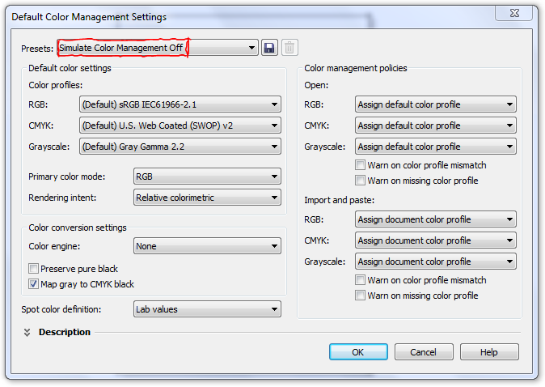

Профиль ICC в Corel Draw X5?
dizwolf / 08.09.2010, 16:29/00:41
Форум:
Предыстория: Работаю в типографии, часто делаю спускаю формы, печатаю в PDF! В Кореле Х3 в настройках печати есть галочка "профиль ICC", ее как раз мне надо убирать для правильного цветоделения! Так вот:
Установил вчера Corel "BMW" т.е. Х5, и оооочень долго искал в настройках печати "профиль ICC", не нашел!(((
ВОПРОС: Кто уже давно юзает Х5, подскажите где в нем вышеупомянутый профиль?
Если вы работаете с файлом через профили, то и выводить надо через них. В противном случае вообще отключите управление цветом - но это делают обычно если не знают как управится с профилями.
Если вам необходимо сохранить оригинальные компоненты СМИК, тогда Preserve CMYK numbers то что доктор прописал!
П.С. Что в вашем понимание "правильное цветоделение" ?
Вот что конкретно мне нужно:
Найти и отключить эту галку, в Кореле Х5!
см. ниже
dizwolf, вы понимаете что система цветом другая в новой версии? НЕТ там этой галочки! Другая система — другой подход.
ок... спасибо! будем разбираться! )))
Равносильно:
